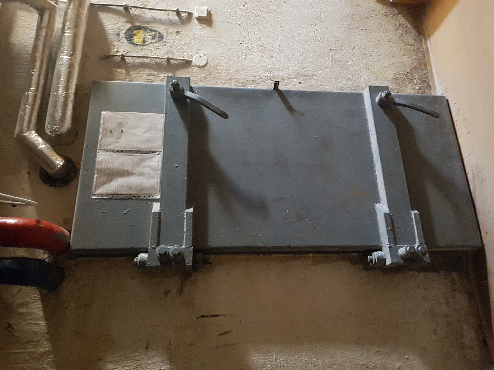
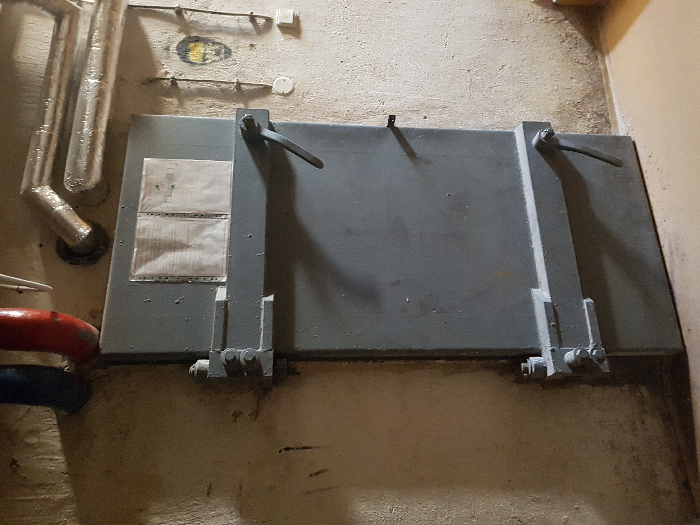
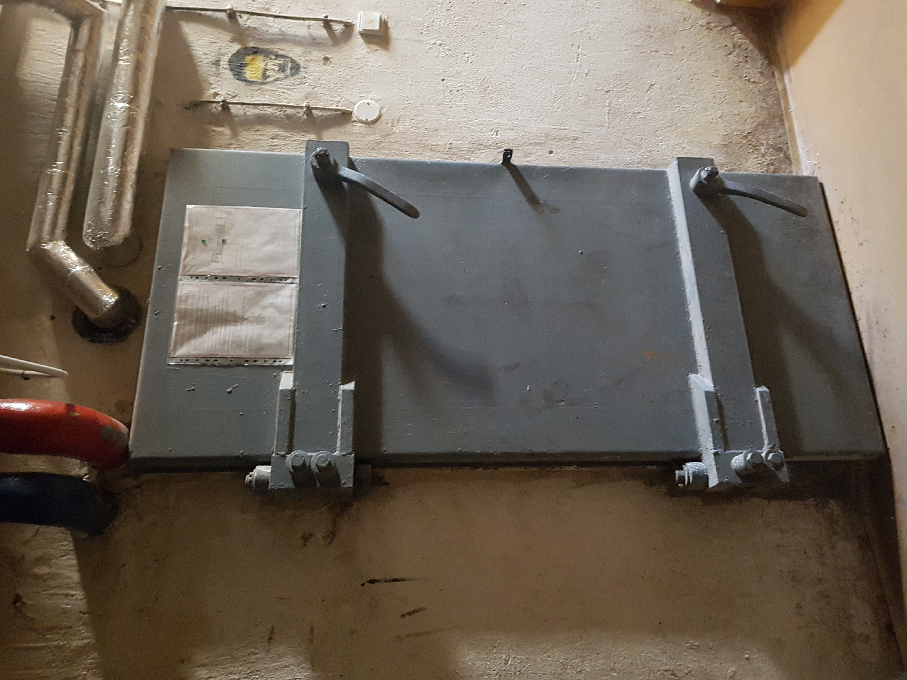

The Students Daily
THE DARK ORIGINS OF THE SCHOOL GJH!

Many have viewed Gymnázium Jura Hronca as a simply elite school.
It has a high reputation to uphold. However, recent investigations
have suggested that GJH might not be the dream school everyone so dearly loves!
Detective Pierre Elliot Emmanuel Porter, also known as Detective PEEP, has snooped
through the school, lowkey suspecting some dark secrets were yet to be revealed.
He said that:
“The rooms are bland AF to be school rooms and there’s a sickening feeling in my stomach.
This isn’t a coincidence.”
His suspicions only grew larger when he discovered the not so hidden bunker underneath the school.
“That was the moment I knew,” Porter continued, his voice serious,
“That the school was originally an abandoned hospital.”
In fact, Porter had suspected that the hospital may have been a replica of Bezrucova Hospital,
which was founded in 1937, but then rebuilt as a school.
“The crumbling walls, the leaking radiators – it all makes
sense now. It was all sus, but the knife in the bunker was the tipping point.”
If you’re considering sending your child to GJH, you should 100% do your research, as Porter's findings are enough to make us say Bye Felicia!

Welcome to the first issue of
The Students Daily. The Students Daily is the
leading GJH digital media company, which
provides only the most relevant juicy scoops
from the school of GJH. Ranging from social relationships
all the way to quizzes the reader can take,
The Students Daily is the pinnacle of good tabloidism.
With new stories coming every day, you ought to find
something that'll catch your eye!
We operate a multi million dollar company
headquartered in Bratislava, Slovakia. With offices
stationed in nearly every country, we are sure to
receive exclusive stories from all over the world.
But of course, we didn't start with all these perks.
The Students Daily began with two friends in just
your ordinary classroom with one goal they wanted to achieve.
They wanted to share stories with the entirety of GJH.
Two weeks later, their business is booming. #nevergiveup
Hello! My name Nina Barabasova
I'm the second half of The Students Daily
and I loved writing all these articles and bringing you all the deets.
xoxo. -The Students Dialy Editors
Hello! My name is Yumi Bezekova.
I'm the second half of The Students Daily
and I really enjoyed creating this tabloid.
We hope you enjoy reading our work of art /hj
xoxo. -The Students Dialy Editors